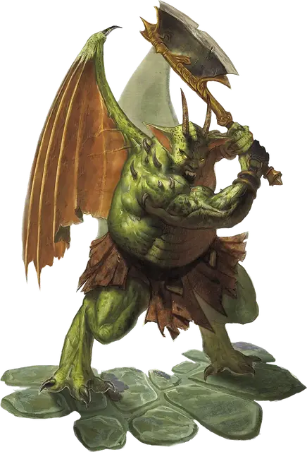

Никалот
Nycaloth
Большое Исчадие (Юголот), нейтрально-злое

Класс Доспеха 18 (природный доспех)
Хиты 123 (13к10 + 52)
Скорость 40 футов, летая 60 футов
| мод | спас | ||
|---|---|---|---|
| СИЛ | 20 | +5 | +5 |
| ЛОВ | 11 | +0 | +0 |
| ТЕЛ | 19 | +4 | +4 |
| мод | спас | ||
|---|---|---|---|
| ИНТ | 12 | +1 | +1 |
| МДР | 10 | +0 | +0 |
| ХАР | 15 | +2 | +2 |
Навыки Восприятие +4, Запугивание +6, Скрытность +4
Сопротивление урону огонь, холод, электричество; дробящий, колющий, рубящий от немагических атак
Иммунитет к урону кислота, яд
Иммунитет к состояниям отравление
Чувства слепое зрение 60 футов, тёмное зрение 60 футов, пассивное Восприятие 14
Языки Бездны, Инфернальный, Телепатия 60 фт.
Опасность 9 (5000 опыта)
Бонус мастерства +4
Особенности
Врождённое колдовство. Базовой характеристикой никалота является Харизма. Он может накладывать следующие заклинания, не нуждаясь в материальных компонентах:
• Неограниченно: невидимость [invisibility] (только на себя), обнаружение магии [detect magic], отражения [mirror image], рассеивание магии [dispel magic], тьма [darkness];
Сопротивление магии. Никалот совершает с преимуществом спасброски от заклинаний и прочих магических эффектов.
Магическое оружие. Атаки оружием никалота являются магическими.
Вариант: призыв юголотов. У некоторых юголотов может быть действие, позволяющее им призывать других юголотов.
Призыв юголота (1/день). Юголот выбирает, кого призвать, и пытается это сделать. Никалот получает 50% шанс призыва 1к4 меззолотов [mezzoloth] или одного никалота [nycaloth].
Призванный юголот появляется в свободном пространстве в пределах 60 футов от призывателя, действует самостоятельно (кроме случая, когда призывающим был ультролот, так как в этом случае призванный юголот действует как его союзник), и не имеет способности призывать других юголотов. Призванный юголот существует в течение 1 минуты, или пока призыватель не умрёт или бонусным действием его не отпустит.
Действия
Мультиатака. Никалот совершает две рукопашные атаки, либо одну рукопашную атаку и телепортируется до или после атаки.
Коготь. Рукопашная атака оружием: +9 к попаданию, досягаемость 5 футов, одна цель. Попадание: Рубящий урон 12 (2к6 + 5). Если цель — существо, она должна преуспеть в спасброске Телосложения Сл 16, иначе будет получать рубящий урон 5 (2к4) в начале каждого своего хода из-за раны. Каждый раз, когда никалот попадает этой атакой по цели с такой раной, урон, причиняемый раной, увеличивается на 5 (2к4). Любое существо может действием закрыть рану успешной проверкой Мудрости (Медицина) Сл 13. Рана также закрывается, если цель получает магическое лечение.
Секира. Рукопашная атака оружием: +9 к попаданию, досягаемость 5 футов, одна цель. Попадание: Рубящий урон 18 (2к12 + 5).
Телепортация. Никалот магическим образом телепортируется вместе со всем несомым и носимым снаряжением, на расстояние до 60 футов в свободное пространство, которое он видит.
Описание
Никалоты, элитные воздушные штурмовики юголотов, выглядят как мускулистые горгульи. Они стремительно взмывают в небо на своих мощных крыльях, похожих на крылья летучих мышей, а их бритвенно-острые когти на руках и ногах с легкостью рассекают плоть и кость. Никалот — кошмарный враг, он внезапно и безо всякого предупреждения наносит мощный удар, а потом телепортируется прочь. Он использует врождённые магические способности, чтобы становиться невидимым или создавать свою иллюзорную копию, таким образом ещё больше вводя в замешательство своих врагов.
Никалоты — наиболее лояльные из юголотов. Если они находят злобного хозяина, который хорошо к ним относится, они вряд ли нарушат соглашение с ним, если только им не пообещают действительно хорошую награду.
См. дополнительно статью: "Бестиарий: Юголоты"